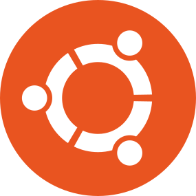
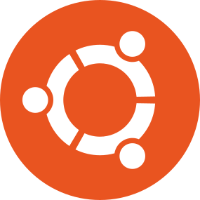
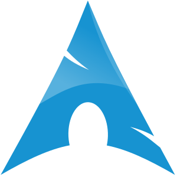
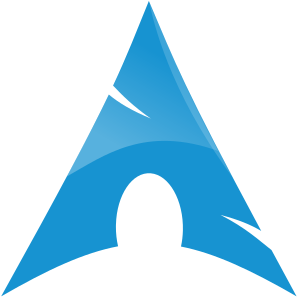

Unix miał duży wkład w rozwój systemów operacyjnych, wprowadzając wiele koncepcji będących w powszechnym użyciu do dziś. Do najbardziej znaczących należy upowszechnienie hierarchicznego systemu plików oraz reprezentacji niemal wszystkich składników systemu jako plików (również urządzeń peryferyjnych). Twórcy systemu zastosowali podczas jego tworzenia wiele nowatorskich rozwiązań oraz założeń projektowych. Narzędzia systemowe zostały zaprojektowane zgodnie z regułą KISS mówiącą, że programy powinny być proste i realizować dobrze jedną rzecz.
UNIX
Historia
Zastosowanie
Polecenia
LINUX
Debian
NAJPOPULARNIEJSZE DYSTRYBUCJE OPARTE NA DEBIANIE:
- Debian
- Ubuntu
- Linux Mint
- Lubuntu/Kubuntu
- Elementary OS
- Kali Linux
- Raspbian
- SteamOS
Arch
NAJPOPULARNIEJSZE DYSTRYBUCJE OPARTE NA ARCHU:
- Linux Arch
- Manjaro
- ArchBang
- BlackArch
- KaOS
- LinHES
- Ninja OS
 
  
